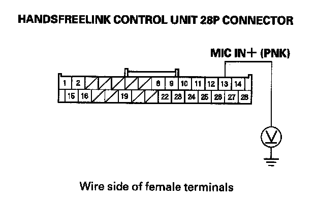
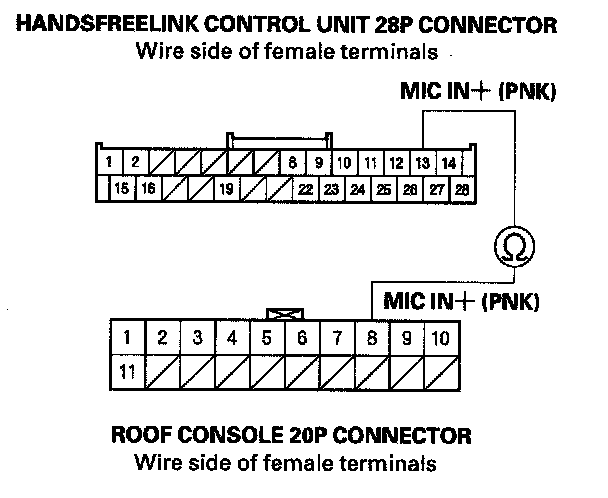

B1775
DTC B1775: Microphone Input/Output Short to Power/OpenNOTE: If you are troubleshooting multiple DTCs, be sure to follow the instructions in B-CAN system diagnosis test mode A.
1. Clear the DTCs with the HDS.
2. Turn the ignition switch OFF, and then back ON (II).
3. Check for DTCs with the HDS.
Is DTC B1775 indicated?
YES - Go to step 4.
NO - Intermittent failure, the system is OK at this time.
4. Turn the ignition switch OFF.
5. Remove the roof console and the console rear trim.
6. Disconnect the 20P connector from the roof console and the 28P connector from the HandsFreeLink control unit.
7. Turn the ignition switch ON (II).

8. Measure the voltage between HandsFreeLink control unit the 28P connector terminal No. 13 and body ground.
Is there battery voltage?
YES - Replace the faulty harness between the HandsFreeLink control unit and the roof console.
NO - Go to step 9.
9. Turn the ignition switch OFF.

10. Check for continuity between HandsFreeLink control unit 28P connector terminal No. 13 and roof console 20P connector terminal No. 8.
Is there continuity?
YES - Substitute a known-good HandsFreeLink control unit, then recheck. If the symptom goes away, replace the original HandsFreeLink control unit.
NO - Replace the faulty harness between the HandsFreeLink control unit and the roof console.